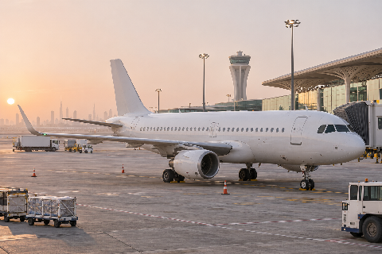

노선 / 해설
에어아라비아 담맘, 11월 20일부터 다마스쿠스 주 4회 운항
월·수·금·일요일에 A320으로 오갈 예정이에요. 16일 발표와 20일 첫 운항을 나눠 정리했어요.

담맘에서 시리아로 바로 가는 표를 찾고 있었다면 이번 주부터 선택지가 하나 늘어요. 에어아라비아 담맘은 11월 16일, 담맘 킹파드 국제공항과 다마스쿠스 국제공항을 잇는 직항편을 11월 20일부터 시작한다고 발표했어요. 운항은 월·수·금·일요일 주 4회로 잡혔고, 첫 운항은 발표 나흘 뒤예요. 아직 첫 편이 뜨기 전이므로 ‘운항을 시작했다’가 아니라 ‘시작할 예정’이라고 읽어야 정확해요.
에어아라비아 담맘은 사우디아라비아 동부를 거점으로 출범한 새 국적 저비용항공사예요. 9월 운항을 시작했고, 11월 19일 암만 노선을 첫 국제선으로 연 뒤 다음 날 다마스쿠스를 두 번째 국제 목적지로 추가할 계획이에요. 같은 에어아라비아 이름을 쓰더라도 샤르자나 아부다비 출발편과는 운항 법인과 출발 공항이 달라요. 예약 화면에서 ‘DMM’ 출발인지 먼저 확인해야 하는 이유예요.
회사 발표에 따르면 담맘발 편은 현지 오후 5시 30분 출발해 다마스쿠스에 오후 7시 45분 도착하고, 돌아오는 편은 오후 8시 30분 출발해 담맘에 오후 10시 45분 닿는 일정이에요. 두 도시가 같은 시간대를 쓰는 시기라 표기상 비행시간은 각 2시간 15분이에요. 다만 실제 소요시간과 도착 시각은 항로·관제 상황에 따라 달라질 수 있어요.
투입 기종은 에어버스 A320이에요. 좁은동체 단일통로 기종이라는 사실만 확인됐고, 날짜별 좌석 배치나 수하물 포함 범위는 발표문에서 확정하지 않았어요. 저비용항공권은 기본 운임이 낮아 보여도 위탁수하물, 좌석 지정, 식사를 더하면 총액이 바뀌어요. 왕복 검색 화면에서 필요한 옵션을 모두 넣은 뒤 다른 연결편과 비교하는 편이 좋아요.
주 4회는 매일 운항이 아니에요. 금요일 출발 뒤 토요일 귀국처럼 원하는 조합이 나오지 않을 수 있고, 결항이 생기면 다음 자사편까지 이틀 이상 기다릴 가능성도 있어요. 담맘은 DMM, 다마스쿠스는 DAM으로 표시돼요. 비슷한 도시 이름보다 공항 코드와 운항 요일을 함께 확인하면 예약 실수를 줄일 수 있어요.
여권과 입국 요건은 항공권 판매와 별개예요. 시리아 입국 가능 여부, 비자, 여행 경보, 보험 적용 범위는 국적과 출발지에 따라 달라질 수 있어요. 항공사가 좌석을 판다는 사실이 입국 자격이나 여행 안전을 보장하지는 않아요. 출발 전 사우디와 시리아의 공식 출입국 안내, 자국 정부의 최신 여행 권고를 함께 확인해야 해요.
이번 발표에서 확인되지 않은 것도 있어요. 노선의 종료 시점, 향후 증편 계획, 장기적으로 적용할 운임은 공개되지 않았어요. 예약 사이트에는 날짜별 판매 좌석과 금액이 바뀔 수 있으니 첫 편 운항 여부는 당일 운항 상태에서, 이후 여행은 실제 왕복 날짜를 넣어 확인하세요. 새 노선이라는 headline보다 내 일정에 맞는 요일과 총비용을 보는 것이 더 실용적이에요.
여행 날짜를 고를 때는 주 4회 운항이라는 점도 꼭 함께 보세요. 매일 뜨는 노선이 아니어서 출국일과 귀국일 조합에 따라 체류 기간이 예상보다 길어질 수 있어요. 특히 다마스쿠스 도착 뒤 다른 도시로 이동한다면 항공편 도착 시각뿐 아니라 현지 교통·입국 절차와 외교부 여행경보를 별도로 확인하는 편이 안전해요. 항공권 화면에 노선이 보인다는 사실만으로 입국 가능 여부나 여행 안전이 보장되는 것은 아니고, 운항 허가와 실제 스케줄도 출발 전에 다시 확인해야 해요.